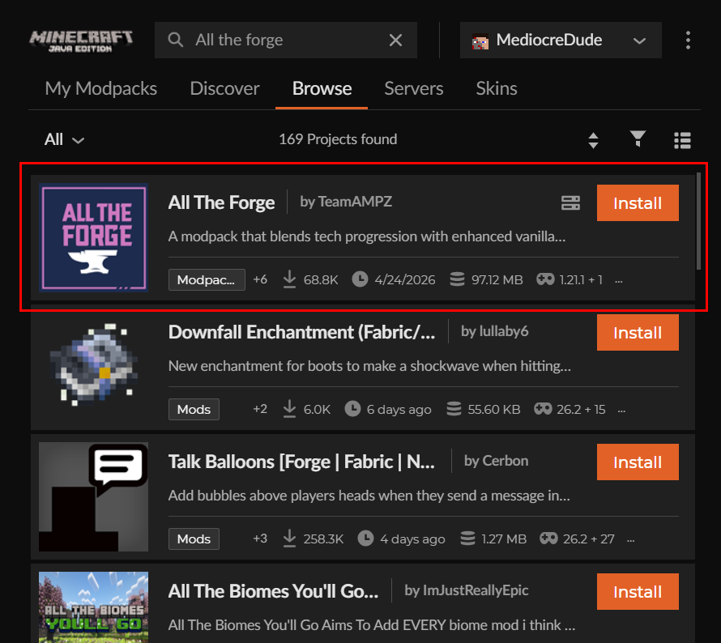

Welcome! This is a simple website to instruct you what mods to install and how to install them in order to play on my minecraft server.
Install Curseforge
First you'll need to install Curseforge, a 3rd party modpack manager. See the video on the right for instructions.
You'll need to log into the app with a Google, Twitch, Discord, or Github account. It shouldn't matter what you use.
Install Modpack

Now that you have Curseforge, you'll want to install the actual modpack "All the Forge"
In curseforge, select Minecraft and navigate to the "Browse" tab and then search "All the Forge". The one you want is simply "All the Forge" by TeamAMPZ.
Click install, and then if there is a popup asking whether you want to create a new profile or add to an existing, click "Create new profile". A new profile for the modpack should show in the "My Modpacks" tab
After the install, navigate to "My Modpacks" and double check the version. The modpack version should be "All The Forge-v11.2.1hf" running Minecraft version 1.21.1.
Launch Game and Join Server
You should now have everything you need to play!
Hit the "Play" button on your new profile in Curseforge whenever you want to run the game. The Minecraft launcher will run with the mods already loaded as a new profile. Then simply log into your minecraft account and run the game without changing the profile.
Use the "minecraft.dthasno.website" as the server address.